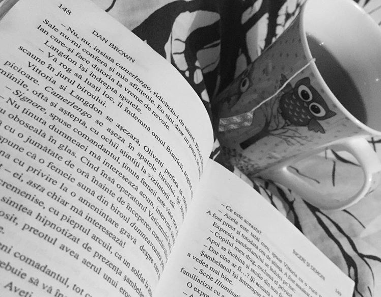
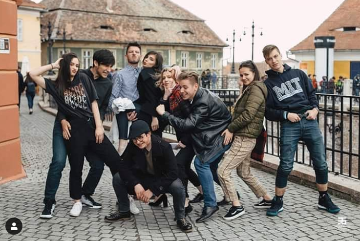

Find out other things to do instead of social media!
Are you tired of spending too much time on social media? Then this article is perfect for you! Read it to find out other interesting things you can do with your spare time!
1. Make time for your hobby

Eduard Stoica(credit: Raluca Calin)
What’s your hobby? Dancing, photography, singing? Doesn’t matter, just make yourself some time for it!
Having a hobby can improve your social life and create a connection with others, because you can frequently enjoy it with other people. If you don’t know what is your hobby yet you should find one, it’s not that hard, just find something you like and do it!
A hobby also helps you develop new skills. As you spend more time at your hobby you will become better and better at it and this will increase your self-confidence and will make you feel valuable when people appreciate your work.
If you are passionate about photography, here you have a link to an amazing website of photography competitions named GuruShots.
GuruShots
2. Read a book

An Opened Book(credit: Raluca Calin)
Unfortunately, a lot of people aren’t reading anymore. Well, I agree that it’s easier to watch a movie or an YouTube video about what you want to know. But did you know that books are more detailed so it’s a bigger chance to remember the information if you read one?
Also the books with a lot of pictures are very useful because your brain will associate the text with an image so it makes learning funnier and you will be able to keep the information in your mind for a longer time.
Still not enough reasons to go and read a book? Here you go one more: they are a real source of inspiration and you can improve your creativity.
3. Spend time with your friends

Photo of me and my friends(credit: Rares Helici)
What can be funnier than spending time with your friends and do amazing things with them? Human beings need communication and socializing. So call your friends and hang out with them!
Are you out of ideas about what can you do with your friends? Maybe this list will help you:
- Play board games
- Visit some museums
- Take pictures
- Make a tour of your town
- Go to cinema
- Organize a party or go to one
- Do something crazy
- Go shopping
- Make a pijama party
- Go for a city-break
If you’ve already done all of theat, don’t worry. Do them again. It doesn’t matter what you are doing as long as you spend quality time with your loved ones.
4. Do something out of the ordinary

Mask Make-Up(credit: Raluca Calin)
Do something crazy! Even if is something about a new make-up look or an unconventional outfit that you usually wouldn’t wear.
Trying new things is very healthy for our brain because that’s how we escape from the ordinary. Our creativity must be challenged as many times as possible so that’s how we can come up with great ideas. Don’t be afraid of doing something new! Use our imagination. You’ll see how good that feels.